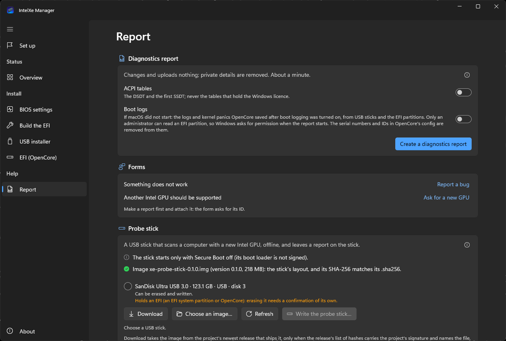

TroubleshootingSorun giderme
Send a reportRapor gönderin
Problems are fixed from logs. A report is one file named after a report ID such as XR-1A2B3C4D; you attach it to a GitHub issue yourself. Nothing is uploaded.Sorunlar loglardan çözülüyor. Rapor, XR-1A2B3C4D gibi bir rapor kimliğiyle adlandırılmış tek bir dosya; onu bir GitHub issue'suna siz ekliyorsunuz. Hiçbir şey yüklenmiyor.
Not sure which entry? Find your problem by what you see.Hangi madde olduğundan emin değil misiniz? Sorununuzu bulun: gördüğünüze göre.
- Make the reportRaporu oluşturunIntelXe Manager's Report page, or a collect script: one file named after a report ID.IntelXe Manager'ın Rapor sayfası ya da bir toplama betiği: rapor kimliğiyle adlandırılmış tek bir dosya.
- What it keeps privateNeyi gizli tutuyorSerial numbers, IDs and names are removed before the file is written; you can read every file.Seri numaraları, kimlikler ve adlar dosya yazılmadan önce çıkarılıyor; her dosyayı okuyabilirsiniz.
- Attach it to an issueBir issue'ya ekleyinThe report ID in the first field, the file in the description.Rapor kimliği ilk alana, dosya açıklama kutusuna.
With IntelXe ManagerIntelXe Manager ile
The easiest way: IntelXe Manager › Report › Create a diagnostics report. It runs the macOS script below (as the user, or in administrator mode for the OpenCore config and root-only counters), shows the step and the elapsed time while it runs, puts the file on your Desktop and lists the warnings it found, with a fix where the app has one. Report a bug (or Ask for a new GPU) then opens the issue form with the report ID filled in. About 16 s on the test machine.

On Windows, IntelXe Manager for Windows › Report does the same with tools/report/collect-windows.ps1 (shipped with the app) and opens the same issue form (The Windows app, step by step).
En kolayı: IntelXe Manager › Rapor › Tanılama raporu oluştur. Aşağıdaki macOS betiğini çalıştırıyor (kullanıcı olarak ya da OpenCore yapılandırması ve yalnızca root'un okuyabildiği sayaçlar için yönetici modunda), çalışırken adımı ve geçen süreyi gösteriyor, dosyayı Masaüstünüze koyuyor ve bulduğu uyarıları, uygulamanın çözümü varsa çözümüyle listeliyor. Ardından Hata bildir (ya da Yeni GPU desteği iste) issue formunu rapor kimliği dolu olarak açıyor. Test makinesinde yaklaşık 16 sn.
Windows'ta Windows için IntelXe Manager › Rapor aynısını tools/report/collect-windows.ps1 ile (uygulamayla birlikte gelir) yapıyor ve aynı issue formunu açıyor (Windows uygulamasıyla adım adım).
The collect scriptsToplama betikleri
Three scripts in the repository's tools/report/. They only read: they change no settings and install nothing, and each takes about a minute. What each one collects: The diagnostics scripts.
Deponun tools/report/ klasöründe üç betik. Yalnızca okuyorlar: hiçbir ayarı değiştirmiyor, hiçbir şey kurmuyorlar; her biri yaklaşık bir dakika sürüyor. Her birinin ne topladığı: Tanılama betikleri.
Options ofSeçeneklericollect-macos.shcollect-linux.shcollect-windows.ps1
macOSmacOS
collect-macos.sh: the main report, required for a bug; run it on macOS, with or without the driver.
collect-macos.sh: ana rapor, bir hata için gerekli; macOS'ta, sürücüyle ya da sürücüsüz çalıştırın.
sh collect-macos.shIt prints the report ID and the file's path. The first section of summary.txt, Warnings, lists the known problems it recognised, each with what to do. Options: --days N (panic and crash reports of the last N days, default 7), --tests (our quick GPU self-tests, if installed), --no-mount / --sudo-mount (how it reads EFI partitions), --acpi (the DSDT and SSDTs as macOS sees them; macOS 26 no longer publishes them, so there it collects nothing), --probe (the results of the staged probe, XeProbe), --out DIR. It needs neither sudo nor Xcode or the Command Line Tools.
Rapor kimliğini ve dosyanın yolunu yazar. summary.txt'nin ilk bölümü olan Warnings, tanıdığı bilinen sorunları ne yapılacağıyla birlikte listeler. Seçenekler: --days N (son N günün panik ve çökme raporları, varsayılan 7), --tests (kuruluysa hızlı GPU öz testlerimiz), --no-mount / --sudo-mount (EFI bölümlerini nasıl okuyacağı), --acpi (DSDT ve SSDT'ler macOS'un gördüğü hâliyle; macOS 26 onları artık yayımlamıyor, orada bir şey toplamaz), --probe (aşamalı yoklamanın sonuçları, XeProbe), --out DIR. Ne sudo ne de Xcode ya da Command Line Tools ister.
Linux, from a live USBCanlı USB'den Linux
For display and boot problems a second report from a Linux live USB on the same machine, with the same monitor, helps a lot. A distribution with kernel 6.12 or newer is best; Ubuntu 25.04+ and Fedora 41+ both work. Copy the archive off the live system before you reboot. For a GPU we do not support yet, add --acpi --bench and open a Support for my Intel GPU issue with this report (tools/report/collect-linux.sh; Help us support your GPU). No Linux at hand: the Xe probe stick below makes the same report.
Ekran ve açılış sorunlarında aynı makinede, aynı monitörle bir Linux canlı USB'sinden alınan ikinci bir rapor çok yardımcı oluyor. Çekirdeği 6.12 ya da daha yeni bir dağıtım en iyisi; Ubuntu 25.04+ ve Fedora 41+ ikisi de çalışıyor. Yeniden başlatmadan önce arşivi canlı sistemden dışarı kopyalayın. Henüz desteklemediğimiz bir GPU için --acpi --bench ekleyin ve bu raporla (tools/report/collect-linux.sh) bir Support for my Intel GPU issue'su açın (GPU'nuzun desteklenmesine yardım edin). Elinizde Linux yoksa aşağıdaki Xe tarama belleği aynı raporu hazırlıyor.
sudo sh collect-linux.shWindowsWindows
collect-windows.ps1: a hardware inventory, if you dual-boot and have no Linux USB; run it on Windows, on the same machine.
collect-windows.ps1: çift açılış yapıyor ve Linux USB'niz yoksa donanım envanteri; aynı makinede Windows'ta çalıştırın.
powershell -ExecutionPolicy Bypass -File collect-windows.ps1No administrator rights needed; -Acpi adds the DSDT and the first SSDT. It also tells whether Resizable BAR and Above 4G decoding are active.
Yönetici hakkı gerekmez; -Acpi DSDT'yi ve ilk SSDT'yi ekler. Resizable BAR ve Above 4G Decoding'in etkin olup olmadığını da söyler.
macOS does not start: the boot logsmacOS açılmıyor: açılış günlükleri
For a PC that does not get to the desktop, turn on boot logging first (Boot logging) and boot the failing way once more. OpenCore then writes its log, boot.efi's lines and the panics it saves into the root of the EFI. The reports collect them from the EFI, with serial numbers, MLB, ROM and UUIDs removed:
Masaüstüne ulaşamayan bir bilgisayar için önce açılış günlüğünü açın (Açılış günlüğü) ve sorunlu açılışı bir kez daha deneyin. OpenCore bunun üzerine günlüğünü, boot.efi'nin satırlarını ve kaydettiği panikleri EFI'nin köküne yazar. Raporlar bunları EFI'den toplar; seri numaraları, MLB, ROM ve UUID'ler çıkarılır:
The Report page of either app: Boot logs on, then Create a diagnostics report.
İki uygulamanın da Rapor sayfası: Açılış günlükleri açık, sonra Tanılama raporu oluştur.


macOS (from your USB stick or a boot that works):
sh collect-macos.sh --boot-logsmacOS (USB belleğinizden ya da çalışan bir açılıştan):
sh collect-macos.sh --boot-logsWindows: collect-windows.ps1 -BootLogs (a USB stick's EFI as you; run it as administrator to read the EFI partitions too).
Windows: collect-windows.ps1 -BootLogs (bir USB belleğin EFI'sini sizin haklarınızla okur; EFI bölümlerini de okuması için yönetici olarak çalıştırın).
Turn boot logging off again afterwards: it slows every boot.
Sonra açılış günlüğünü yeniden kapatın: her açılışı yavaşlatıyor.
An Intel GPU the driver does not support yet: the Xe probe stickSürücünün henüz desteklemediği bir Intel GPU: Xe tarama belleği
It is not for a B580 that does not boot: use the boot logs above.
Açılmayan bir B580 için değil: onun için yukarıdaki açılış günlüklerini kullanın.
For such a GPU the Linux report above is what we need (Help us support your GPU). The Xe probe stick makes that report on a PC without Linux: it boots offline, keeps the disks read-only, records how Linux's driver starts the GPU and writes the report to the stick. It is published as xe-probe-stick-VERSION.img.zip when the release has it, with a version of its own (0.1.6 carries xe-probe-stick-0.1.0.img.zip, the same image as 0.1.5); IntelXe Manager for Windows downloads it, checked against the release's signed list, writes it to a USB stick and reads the report back on its Report page; tools/probe-stick/write-stick.sh writes it on macOS and Linux. Details: tools/probe-stick/README.md in the repository.
Böyle bir GPU için gereken, yukarıdaki Linux raporu (GPU'nuzun desteklenmesine yardım edin). Xe tarama belleği (Xe probe stick) bu raporu Linux'u olmayan bir bilgisayarda hazırlıyor: ağsız açılıyor, diskleri salt okunur tutuyor, Linux sürücüsünün GPU'yu nasıl başlattığını kaydediyor ve raporu belleğe yazıyor. Sürümde varsa xe-probe-stick-VERSION.img.zip olarak yayımlanıyor ve kendi sürüm numarası var (0.1.6, 0.1.5'teki görüntünün aynısı olan xe-probe-stick-0.1.0.img.zip'i taşıyor); Windows için IntelXe Manager onu indiriyor, sürümün imzalı listesine göre denetliyor, bir USB belleğe yazıyor ve raporu Rapor sayfasında geri okuyor; macOS ve Linux'ta tools/probe-stick/write-stick.sh yazıyor. Ayrıntılar: depoda tools/probe-stick/README.md.
Experimental: tested in QEMU and written to a real USB stick, not yet booted on real hardware.
Deneysel: QEMU'da denendi ve gerçek bir USB belleğe yazıldı, henüz gerçek donanımda açılmadı.
Open the issueIssue'yu açın
- Open a new issue with the Something is broken form (for a GPU that is not supported yet: Support for my Intel GPU).
- Put the report ID (
XR-…) in the first field; several reports (macOS and Linux), separated by commas. - Drag the
.tar.gzor.zipfile into the description box (up to 25 MB; if it is larger, run the macOS script again with--days 2). - Say what you did, what you expected and what happened instead. Please do not post raw system reports: they carry serial numbers.
- Something is broken formuyla yeni bir issue açın (henüz desteklenmeyen bir GPU için: Support for my Intel GPU).
- Rapor kimliğini (
XR-…) ilk alana yazın; birden çok rapor varsa (macOS ve Linux) virgülle ayırın. .tar.gzya da.zipdosyasını açıklama kutusuna sürükleyin (25 MB'a kadar; daha büyükse macOS betiğini--days 2ile yeniden çalıştırın).- Ne yaptığınızı, ne beklediğinizi ve onun yerine ne olduğunu yazın. Lütfen ham sistem raporlarını paylaşmayın: seri numaraları içeriyorlar.
A security problem (for example a kernel memory bug reachable from an unprivileged process) goes privately through GitHub's "Report a vulnerability" button on the Security tab, not into a public issue.
Bir güvenlik sorunu (örneğin yetkisiz bir süreçten erişilebilen bir çekirdek bellek hatası) herkese açık bir issue'ya değil, GitHub'ın Security sekmesindeki "Report a vulnerability" düğmesiyle gizli olarak bildirilir.
What a report keeps privateRapor neyi gizli tutuyor
Every script removes these values before the archive is written, and some things it never collects:
Removed before the archive is written
- serial numbers (the machine, board and disks, and the monitor's serial inside its EDID)
- the hardware UUID, MLB and ROM (the machine-id on Linux, the MachineGuid on Windows)
- MAC addresses
- your user name and full name
- the computer's host names
- the names of Wi-Fi networks your machine knows
- in the OpenCore config, the values of
SystemSerialNumber,MLB,SystemUUID,ROM,BoardSerialNumber,ChassisSerialNumberandApECID
Never collected
- screen contents, your documents
- passwords, Wi-Fi passwords
- the Windows product key and licensing data
- full system logs (only the lines about graphics)
- ACPI tables unless you ask (then never the MSDM or SLIC table)
They read these values from your own machine, remove each from every file, then search the output once more and stop without writing a file if anything is left.
Her betik bu değerleri arşiv yazılmadan önce çıkarıyor; bazı şeyleri de hiç toplamıyor:
Arşiv yazılmadan önce çıkarılanlar
- seri numaraları (makine, anakart, diskler ve monitörün EDID'indeki seri numarası)
- donanım UUID'si, MLB ve ROM (Linux'ta machine-id, Windows'ta MachineGuid)
- MAC adresleri
- kullanıcı adınız ve tam adınız
- bilgisayarın ana bilgisayar adları
- makinenizin bildiği Wi-Fi ağlarının adları
- OpenCore yapılandırmasında
SystemSerialNumber,MLB,SystemUUID,ROM,BoardSerialNumber,ChassisSerialNumberveApECIDdeğerleri
Hiç toplanmayanlar
- ekran içeriği, belgeleriniz
- parolalar, Wi-Fi parolaları
- Windows ürün anahtarı ve lisans verileri
- tüm sistem logları (yalnızca grafikle ilgili satırlar alınıyor)
- siz istemedikçe ACPI tabloları (istediğinizde de MSDM ya da SLIC tablosu asla)
Bu değerleri kendi makinenizden okuyup her dosyadan siliyor, sonra çıktıyı bir kez daha tarıyor ve bir şey kalmışsa dosya yazmadan duruyor.
The archive is plain text plus a few small binaries: unpack it and read every file before you share it (tar -xzf xe-report-XR-1A2B3C4D.tar.gz).
Arşiv düz metin ve birkaç küçük ikili dosyadan oluşuyor: paylaşmadan önce açıp her dosyayı okuyabilirsiniz (tar -xzf xe-report-XR-1A2B3C4D.tar.gz).